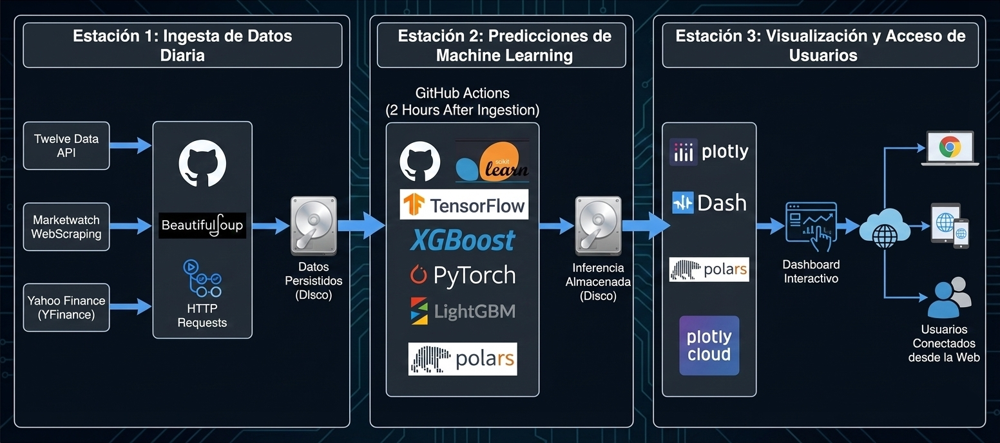
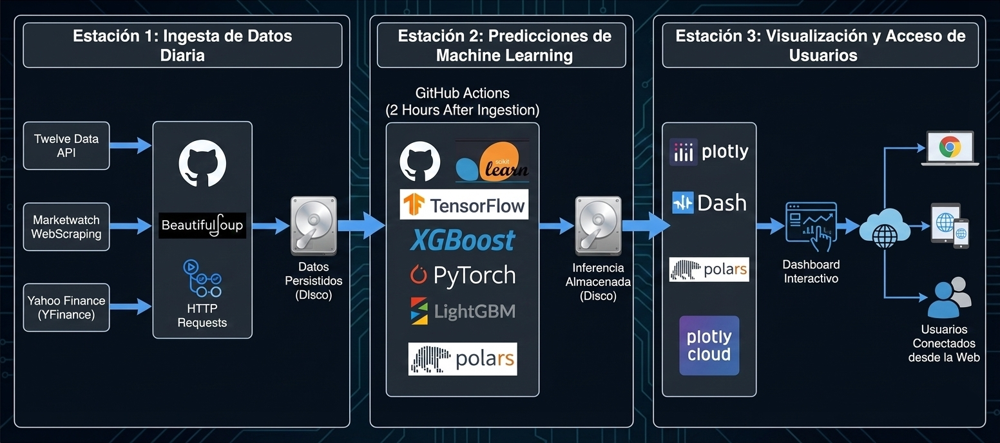
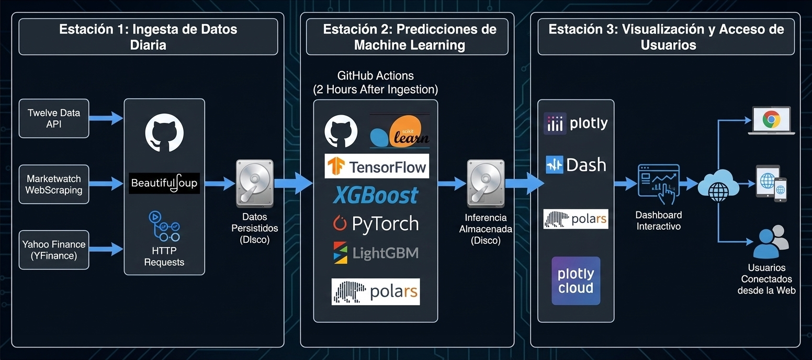

Capturas de pantalla

 

Predicciones y backtesting de modelos de Machine Learning para instrumentos financieros.
Este proyecto muestra un dashboard interactivo desarrollado con Dash que visualiza predicciones y resultados de backtesting de modelos entrenados con distintas librerías (Sklearn, LightGBM, XGBoost, PyTorch, TensorFlow) sobre varios instrumentos financieros como S&P 500, EURUSD, BTCUSD y XAUUSD.
Los modelos predicen la dirección del precio del día siguiente y el backtest evalúa la rentabilidad y la tasa de aciertos bajo una estrategia de inversión prudente.
